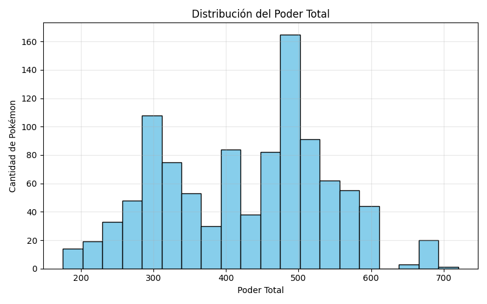
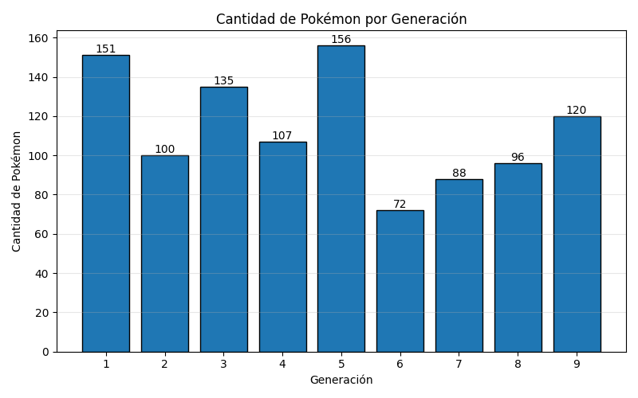
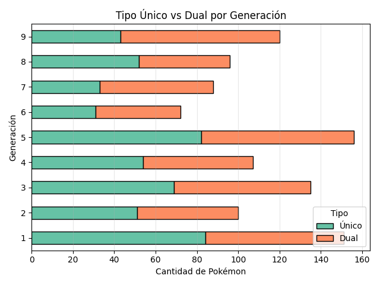
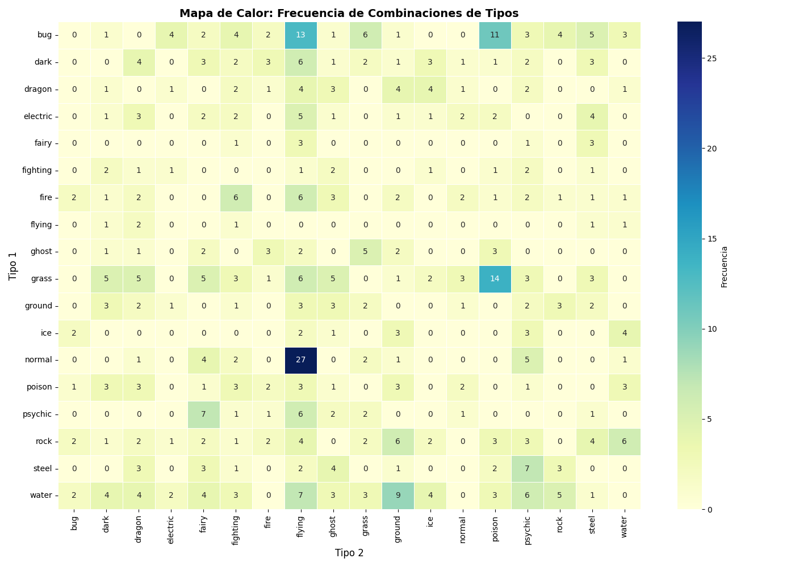

Objetivo del Proyecto
Procesamiento y visualización del dataset Pokémon Complete 2025. Este reporte analiza tendencias generacionales, distribución de poder y complejidad taxonómica mediante el uso de Python, Pandas y Seaborn.
Distribución del Poder Total
Análisis de la frecuencia y concentración del poder estadístico. El histograma revela un pico claro entre 300 y 350 puntos base.

Producción por Generación
Comparación del volumen de nuevos Pokémon. Se observa que la Generación 5 lidera en cantidad, mientras que la 6 presenta el volumen más bajo.

Evolución del Poder Promedio
Evidencia del fenómeno 'Power Creep'. Se observa una escala estadística sostenida desde la Generación 1 hasta la 9.

Complejidad Taxonómica
Proporción de Pokémon de tipo único frente a tipo dual. El análisis por barras apiladas permite ver la estabilidad de esta relación a través del tiempo.

Matriz de Combinaciones de Tipos
Mapa de calor que revela densidades y vacíos en las combinaciones elementales. Identifica patrones estructurales de diseño en el dataset.
